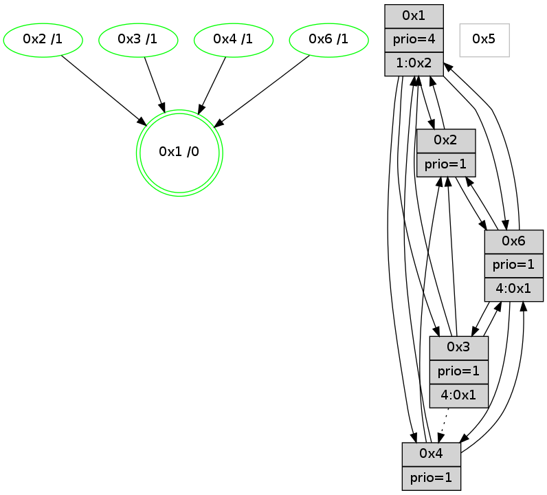

>> << IDX [start] -100 -25 -5 +0 +5 +25 +100 [780.141070127]
 Previous packets
----------------------------------------------------------------------
775.219985 beacon01(adaf) #0 coord=01,02,05,03,04,06 cycle=432.0ms assoc
-- color-indic=1 64 1b a8
775.229946 beacon02(adaf) #0 coord=01,02,05,03,04,06 cycle=432.0ms assoc 64 4a 57
775.239946 beacon05(adaf) #0 coord=01,02,05,03,04,06 cycle=432.0ms assoc 64 ec 7d
775.249947 beacon03(adaf) #0 coord=01,02,05,03,04,06 cycle=432.0ms assoc 64 70 59
775.259947 beacon04(adaf) #0 coord=01,02,05,03,04,06 cycle=432.0ms assoc 64 d6 73
775.269947 beacon06(adaf) #0 coord=01,02,05,03,04,06 cycle=432.0ms assoc 64 a2 6f
775.281703 [Hello(6): seq=492 sym=3,4,1,2 sysInfo=hasWarning,coloring-mode-on,ColoringModeIndicationCalled stat=3:7,5,8,1/4:0,3,0,0/1:0,4,12,1/2:8,3,2,2]
775.285798 [Color(1) seq=5 @0:0 prio=4 >1.@2,1.@3,1.@6]
----------------------------------------------------------------------
775.712094 beacon01(adaf) #0 coord=01,02,05,03,04,06 cycle=432.0ms assoc
-- color-indic=1 64 56 af
775.722055 beacon02(adaf) #0 coord=01,02,05,03,04,06 cycle=432.0ms assoc 64 07 50
775.732055 beacon05(adaf) #0 coord=01,02,05,03,04,06 cycle=432.0ms assoc 64 a1 7a
775.742055 beacon03(adaf) #0 coord=01,02,05,03,04,06 cycle=432.0ms assoc 64 3d 5e
775.752057 beacon04(adaf) #0 coord=01,02,05,03,04,06 cycle=432.0ms assoc 64 9b 74
775.762056 beacon06(adaf) #0 coord=01,02,05,03,04,06 cycle=432.0ms assoc 64 ef 68
775.774511 [Color(6) seq=5 @0:0 prio=1 >4.@1,1.@2,1.@3]
775.780313 [Hello(4): seq=579 sym=6,1 asym=2 sysInfo=hasWarning,coloring-mode-on,ColoringModeIndicationCalled stat=6:11,0,5,10/1:14,6,12,1/2:0,2,0,0]
775.783393 [Color(4) seq=5 @0:0 prio=1]
775.787539 [Color(3) seq=5 @0:0 prio=1]
775.790075 [Hello(2): seq=1069 sym=6,4,1 sysInfo=coloring-mode-on,ColoringModeIndicationCalled stat=6:0,0,1,3/4:0,1,0,0/1:11,6,11,1]
775.792776 [Color(2) seq=5 @0:0 prio=1]
----------------------------------------------------------------------
776.204201 beacon01(adaf) #0 coord=01,02,05,03,04,06 cycle=432.0ms assoc
-- color-indic=1 64 92 c0
776.214162 beacon02(adaf) #0 coord=01,02,05,03,04,06 cycle=432.0ms assoc 64 c3 3f
776.224162 beacon05(adaf) #0 coord=01,02,05,03,04,06 cycle=432.0ms assoc 64 65 15
776.234163 beacon03(adaf) #0 coord=01,02,05,03,04,06 cycle=432.0ms assoc 64 f9 31
776.244163 beacon04(adaf) #0 coord=01,02,05,03,04,06 cycle=432.0ms assoc 64 5f 1b
776.254163 beacon06(adaf) #0 coord=01,02,05,03,04,06 cycle=432.0ms assoc 64 2b 07
776.265919 [Hello(6): seq=493 sym=3,4,1,2 sysInfo=hasWarning,coloring-mode-on,ColoringModeIndicationCalled stat=3:8,6,8,1/4:1,4,0,0/1:0,5,12,1/2:9,4,2,2]
776.269046 [Color(1) seq=6 @0:0 prio=4 >1.@2,1.@3,1.@6]
----------------------------------------------------------------------
776.696309 beacon01(adaf) #0 coord=01,02,05,03,04,06 cycle=432.0ms assoc
-- color-indic=1 64 de 70
776.706269 beacon02(adaf) #0 coord=01,02,05,03,04,06 cycle=432.0ms assoc 64 8f 8f
776.716271 beacon05(adaf) #0 coord=01,02,05,03,04,06 cycle=432.0ms assoc 64 29 a5
776.726270 beacon03(adaf) #0 coord=01,02,05,03,04,06 cycle=432.0ms assoc 64 b5 81
776.736271 beacon04(adaf) #0 coord=01,02,05,03,04,06 cycle=432.0ms assoc 64 13 ab
776.746272 beacon06(adaf) #0 coord=01,02,05,03,04,06 cycle=432.0ms assoc 64 67 b7
776.758388 [Hello(1): seq=479 sym=2,3,4,6 sysInfo=hasWarning,coloring-mode-on,ColoringModeRequestCalled stat=2:0,5,3,2/3:10,3,7,1/4:1,3,1,0/6:12,2,4,3]
776.762363 [Color(6) seq=6 @0:0 prio=1 >4.@1,1.@2,1.@3]
776.764470 [Hello(4): seq=580 sym=6,1,2 sysInfo=hasWarning,coloring-mode-on,ColoringModeIndicationCalled stat=6:12,0,5,10/1:14,7,12,1/2:1,3,0,0]
776.767504 [Color(4) seq=6 @0:0 prio=1]
776.774278 [Hello(2): seq=1070 sym=6,4,1 sysInfo=coloring-mode-on,ColoringModeIndicationCalled stat=6:1,0,1,3/4:0,1,0,0/1:11,7,11,1]
776.776825 [Color(3) seq=6 @0:0 prio=1]
776.781913 [Color(2) seq=6 @0:0 prio=1]
----------------------------------------------------------------------
777.188417 beacon01(adaf) #0 coord=01,02,05,03,04,06 cycle=432.0ms assoc
-- color-indic=1 64 1a 1f
777.198379 beacon02(adaf) #0 coord=01,02,05,03,04,06 cycle=432.0ms assoc 64 4b e0
777.208380 beacon05(adaf) #0 coord=01,02,05,03,04,06 cycle=432.0ms assoc 64 ed ca
777.218379 beacon03(adaf) #0 coord=01,02,05,03,04,06 cycle=432.0ms assoc 64 71 ee
777.228379 beacon04(adaf) #0 coord=01,02,05,03,04,06 cycle=432.0ms assoc 64 d7 c4
777.238380 beacon06(adaf) #0 coord=01,02,05,03,04,06 cycle=432.0ms assoc 64 a3 d8
777.250144 [Hello(6): seq=494 sym=3,4,1,2 sysInfo=hasWarning,coloring-mode-on,ColoringModeIndicationCalled stat=3:9,7,8,1/4:1,5,0,0/1:0,6,12,1/2:10,5,2,2]
777.252641 [Color(1) seq=7 @0:0 prio=4 >1.@2,1.@3,1.@6]
----------------------------------------------------------------------
777.680526 beacon01(adaf) #0 coord=01,02,05,03,04,06 cycle=432.0ms assoc
-- color-indic=1 64 44 7e
777.690488 beacon02(adaf) #0 coord=01,02,05,03,04,06 cycle=432.0ms assoc 64 15 81
777.700487 beacon05(adaf) #0 coord=01,02,05,03,04,06 cycle=432.0ms assoc 64 b3 ab
777.710487 beacon03(adaf) #0 coord=01,02,05,03,04,06 cycle=432.0ms assoc 64 2f 8f
777.720487 beacon04(adaf) #0 coord=01,02,05,03,04,06 cycle=432.0ms assoc 64 89 a5
777.730487 beacon06(adaf) #0 coord=01,02,05,03,04,06 cycle=432.0ms assoc 64 fd b9
777.741368 [Hello(1): seq=480 sym=2,3,4,6 sysInfo=hasWarning,coloring-mode-on,ColoringModeRequestCalled stat=2:1,6,3,2/3:10,4,7,1/4:1,4,1,0/6:12,2,4,3]
777.746934 [Color(2) seq=7 @0:0 prio=1]
777.748794 [Color(4) seq=7 @0:0 prio=1]
777.752639 [Color(3) seq=7 @0:0 prio=1]
----------------------------------------------------------------------
778.172635 beacon01(adaf) #0 coord=01,02,05,03,04,06 cycle=432.0ms assoc
-- color-indic=1 64 80 11
778.182596 beacon02(adaf) #0 coord=01,02,05,03,04,06 cycle=432.0ms assoc 64 d1 ee
778.192596 beacon05(adaf) #0 coord=01,02,05,03,04,06 cycle=432.0ms assoc 64 77 c4
778.202596 beacon03(adaf) #0 coord=01,02,05,03,04,06 cycle=432.0ms assoc 64 eb e0
778.212596 beacon04(adaf) #0 coord=01,02,05,03,04,06 cycle=432.0ms assoc 64 4d ca
778.222597 beacon06(adaf) #0 coord=01,02,05,03,04,06 cycle=432.0ms assoc 64 39 d6
778.234323 [Hello(6): seq=495 sym=3,4,1,2 sysInfo=hasWarning,coloring-mode-on,ColoringModeIndicationCalled stat=3:9,8,8,1/4:1,6,0,0/1:1,7,12,1/2:10,6,2,2]
778.239064 [Color(1) seq=8 @0:0 prio=4 >1.@2,1.@3,1.@6]
----------------------------------------------------------------------
778.664744 beacon01(adaf) #0 coord=01,02,05,03,04,06 cycle=432.0ms assoc
-- color-indic=1 64 cc a1
778.674705 beacon02(adaf) #0 coord=01,02,05,03,04,06 cycle=432.0ms assoc 64 9d 5e
778.684704 beacon05(adaf) #0 coord=01,02,05,03,04,06 cycle=432.0ms assoc 64 3b 74
778.694706 beacon03(adaf) #0 coord=01,02,05,03,04,06 cycle=432.0ms assoc 64 a7 50
778.704705 beacon04(adaf) #0 coord=01,02,05,03,04,06 cycle=432.0ms assoc 64 01 7a
778.714706 beacon06(adaf) #0 coord=01,02,05,03,04,06 cycle=432.0ms assoc 64 75 66
778.726228 [Hello(1): seq=481 sym=2,3,4,6 sysInfo=hasWarning,coloring-mode-on,ColoringModeRequestCalled stat=2:1,7,3,2/3:10,5,7,1/4:1,5,1,0/6:12,2,4,3]
778.730788 [Color(6) seq=8 @0:0 prio=1 >4.@1,1.@2,1.@3]
778.733529 [Color(2) seq=8 @0:0 prio=1]
778.737310 [Color(4) seq=8 @0:0 prio=1]
----------------------------------------------------------------------
779.156853 beacon01(adaf) #0 coord=01,02,05,03,04,06 cycle=432.0ms assoc
-- color-indic=1 64 08 ce
779.166814 beacon02(adaf) #0 coord=01,02,05,03,04,06 cycle=432.0ms assoc 64 59 31
779.176814 beacon05(adaf) #0 coord=01,02,05,03,04,06 cycle=432.0ms assoc 64 ff 1b
779.186816 beacon03(adaf) #0 coord=01,02,05,03,04,06 cycle=432.0ms assoc 64 63 3f
779.196815 beacon04(adaf) #0 coord=01,02,05,03,04,06 cycle=432.0ms assoc 64 c5 15
779.206816 beacon06(adaf) #0 coord=01,02,05,03,04,06 cycle=432.0ms assoc 64 b1 09
779.218579 [Hello(6): seq=496 sym=3,4,1,2 sysInfo=hasWarning,coloring-mode-on,ColoringModeIndicationCalled stat=3:9,9,8,1/4:1,7,0,0/1:1,8,12,1/2:10,6,2,2]
779.221345 [STC(1) #0.57 new-neigh,tree-change,stable,to-color d=0]
779.222973 [Color(1) seq=9 @0:0 prio=4 >1.@2,1.@3,1.@6]
----------------------------------------------------------------------
779.648962 beacon01(adaf) #0 coord=01,02,05,03,04,06 cycle=432.0ms assoc
-- color-indic=1 64 45 c9
779.658923 beacon02(adaf) #0 coord=01,02,05,03,04,06 cycle=432.0ms assoc 64 14 36
779.668925 beacon05(adaf) #0 coord=01,02,05,03,04,06 cycle=432.0ms assoc 64 b2 1c
779.678923 beacon03(adaf) #0 coord=01,02,05,03,04,06 cycle=432.0ms assoc 64 2e 38
779.688925 beacon04(adaf) #0 coord=01,02,05,03,04,06 cycle=432.0ms assoc 64 88 12
779.698924 beacon06(adaf) #0 coord=01,02,05,03,04,06 cycle=432.0ms assoc 64 fc 0e
779.711911 [STC(6)->1 #0.57 new-neigh,tree-change,stable,to-color d=1]
779.714501 [TreeStatus(6)-.->1 #0.57 new-neigh,tree-change,stable child=1]
779.715633 [Hello(4): seq=583 sym=6,1,2 sysInfo=hasWarning,coloring-mode-on,ColoringModeIndicationCalled stat=6:15,0,5,10/1:0,10,13,1/2:2,4,0,0]
779.717619 [Hello(2): seq=1073 sym=6,1 sysInfo=coloring-mode-on,ColoringModeIndicationCalled stat=6:4,0,1,3/1:13,10,12,1]
779.719303 [STC(4)->1 #0.57 new-neigh,tree-change,stable,to-color d=1]
779.721095 [Hello(3): seq=581 sym=2,1,6 asym=4 sysInfo=hasWarning,coloring-mode-on,ColoringModeIndicationCalled stat=2:2,3,0,0/1:14,10,9,1/6:14,1,8,9/4:1,3,0,0]
779.723981 [STC(3)->1 #0.57 new-neigh,tree-change,stable,to-color d=1]
779.726252 [Color(3) seq=9 @0:0 prio=1 >4.@1,1.@2,1.@6]
779.728685 [Color(6) seq=9 @0:0 prio=1 >4.@1,1.@2,1.@3]
779.731136 [Color(4) seq=9 @0:0 prio=1]
779.734680 [STC(2)->1 #0.57 new-neigh,tree-change,stable,to-color d=1]
779.736340 [Color(2) seq=9 @0:0 prio=1]